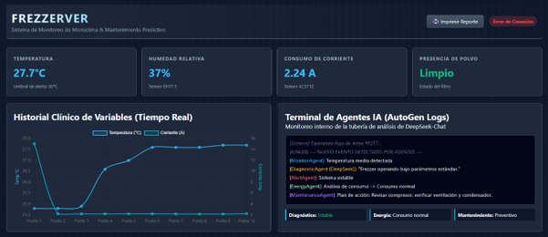
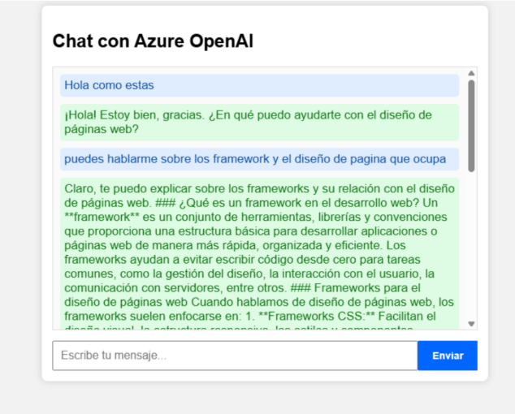
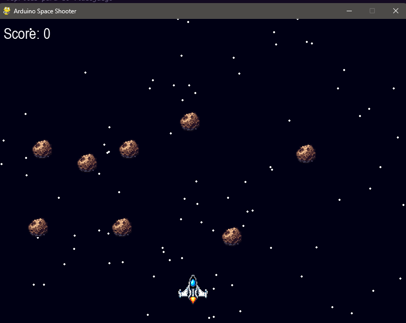

Sobre mí
Soy un desarrollador de software e ingeniero en formación, apasionado por conectar el mundo físico con el digital mediante tecnologías avanzadas.
Habilidades Técnicas
Proyectos destacados
Sistema IoT con IA
Monitoreo de temperatura y humedad usando Arduino y MQTT. Implementación de Machine Learning para predecir condiciones ambientales.

Ver Proyecto ↗Asistente de IA (Chatbot)
Creación de una página web integrada con la API de OpenAI para responder preguntas y brindar asistencia automatizada en tiempo real.

Ver Proyecto ↗Agenda de Contactos
Aplicación móvil con sistema de autenticación, registro de usuarios y almacenamiento local optimizado mediante SQLite.
 Ver Proyecto ↗
Ver Proyecto ↗
Arduino Space Shooter
Videojuego desarrollado en Pygame controlado mediante un control físico Arduino a través de comunicación serial interactiva.

Ver Proyecto ↗Certificaciones
¿Tienes un proyecto en mente?
Estoy disponible para prácticas profesionales y desarrollo freelance.